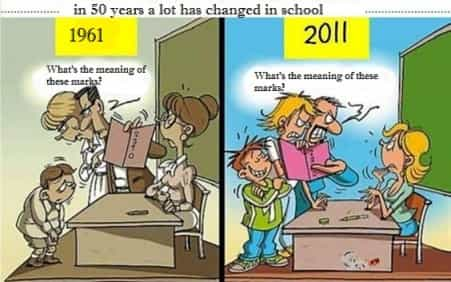

< < < Back
A Final Blow To American Education – Return Of Kings
Through a strange accident of timing, I was mostly educated by a generation of old-guard teachers on the verge of retirement. Starting in about the eighth grade, it seemed like two or three threw in the towel at the end of every year, having put in their 25 or 30 years. In other words, I was the last student for an uncanny number of teachers. I’m pretty young, but being schooled by a series of old-timers imparted an old-soul sensibility that still gets pointed out to me regularly.
Naturally, these teachers ran their classrooms in the old-school ways. My math teacher, a crusty frog- man with old-man spots, claimed to have fought in the Korean War—which was not thoroughly implausible. He’d actually retired and returned to teaching, since he had nothing else to do. When we asked him what good trigonometry would be in “the real world,” he claimed he’d used it to fire volleys into the enemy camp. When he’d catch us taking notes on basic concepts he say, “This is why this generation is so stupid.” If students seemed to be spacing out or dozing off, he throw pencil erasers at them or squirt them with a spray bottle, while hurling verbal abuse at the whole class.
Our woodshop teacher, a frustrated, angry dude with a heavy Southern accent, would facepalm (before that term was in wide use) every time a student did something he deemed to be dumb. He would take it upon himself to throw the brick of reality into our ninth-grade faces. When this gigantic fat kid refused to do his projects, he called him out in front of everyone.
Teacher: Tyrell, what do you think you’re going to do with your life, since you never do your work?
Fat Kid: I’m going to play professional football.
Teacher: Professional football players are fast—even the big ones. I’ll tell you what: I’m 62 years old. You’re 14 or 15. Let’s go outside and race. If you win, I’ll give you an automatic A in the class. If you don’t, you have accept that you’ll probably never make it onto a top college team, never mind the NFL.
The kid started crying. We didn’t say fucking shit.
The hallways were no different. Every time you heard “young man!” behind you, you knew you were in for some trouble. One time, I made the mistake of spitting in one of the (outdoor) hallways on the way to class. Almost instantly, I heard the trademark call of Mr. Pritchard, the school disciplinarian:
Pritchard: Young man!
Me: Yes? [with attitude]
Pritchard: I’m going to need you to pick that up.
Me: How do you expect me to pick that shit up? [with more attitude]
At the sound of the S-word, Pritchard grabbed my punk-ass by the shirt, two-handed, and slammed me against the lockers directly behind me, painfully jamming the lock mechanism into my back. Somehow, it suddenly occurred to me that I could use the paper towel in my backpack to wipe it up, which I promptly did while apologizing.
Nowadays, any one of these acts would get a teacher fired, maybe indicted. But, at my school, a complaint would have had you laughed out of the office. And, no one thought to complain. Parents, teachers, administrators, and students all had an understanding that this is how you operated a school effectively. The old-timers ran a tight operation and had the freedom (and, more importantly, the power) to teach and discipline us. My experience was a little anachronistic, because so many of my teachers were old, but this was just the norm in very recent history.
Times have changed.
This week, a cell-phone video taken in a Duncanville, Texas classroom made the rounds on the Internet. In it, Jeff Bliss—a long-haired stoner who looks like one of the ancillary bullies from the Simpsons—directs a tirade at his teacher after having been asked to leave the room. In the 87-second video, the former drop-out criticizes his teacher’s pedagogical technique, calling for her to “touch [her students’] hearts” instead of just handing them “freakin’ packets.”
You’d think that this rather ordinary event would go unnoticed. Instead, the video went viral. Even more surprisingly, the kid was showered with praise for his “courage” and “intelligence.” He appeared on the local news and was celebrated in a variety of online outlets. The teacher was held up as the paragon of everything that’s wrong with today’s education system: lazy, uncommitted, and incompetent. She was placed on administrative leave by the school’s principal in direct response to the reaction to the video.
But neither of them deserved what they got.
This pot-head slacker certainly deserves no praise. Defiantly parroting a few tired, heartwarming platitudes from a Robin Williams movie isn’t courage, it’s disruptive—and ridiculous. It isn’t the teacher’s responsibility to captivate you with her creative teaching style, or blow you away with some creative illustration of how amazing the subject-matter is—like in some Hollywood movie–just so that you’ll sit still in your chair. Being an 18-year-old man still in the tenth grade also evaporates any credibility you have in speaking on matters of learning and education. Furthermore, no one is talking about why Bliss was kicked out of the classroom in the first place. He’s likely displayed this pattern of disruptiveness, for which he clearly accepts no accountability. It’s always someone else’s fault.
Julie Phung, the teacher, is also receiving undue blame. Even if the claims are true, what else do you expect from teachers nowadays? There’s little incentive to do anything but the minimum, never mind scintillating daily presentations to keep the easily distractable engaged for an extra 10 minutes. The hours are long (contrary to popular belief) and the attitudes, nuisances, and outright risks you have to put with increase with every year. You’re constantly attacked from all sides: the increasingly degenerate students, shitty (or entitled) parents, the principal, society at-large.
Not only that, you’re also a paper tiger with little power to maintain order or stand up for yourself—a fact the students are keenly aware of. Even if a kid punches you in the face, you run the risk of major legal troubles—never mind jeopardizing your livelihood—for so much as restraining them. If Ms. Phung can be placed on leave for not “touching kids’ hearts” enough, what do you think a slam against some lockers would get you? All of this for a job that pays shit–a salary so low that it’s not going to attract the best and the brightest, and hasn’t for years. Frankly, we should be thankful anyone is willing to do that job.

American education is in irretrievable decline for a laundry list of reasons: the willful de-funding of it, the decline of competent parenting, shrinking attention spans, large class-sizes, the criminalization of teacher-imposed discipline, the removal of trades (shop classes) from curriculum offerings, the McDonaldization effect created by mandatory standardized testing. The list goes on.
Teachers have been rendered into little more than a cross between babysitter and probation officer. We have to face the fact that the teaching profession, as we knew it, no longer exists. To blame teachers for systemic problems is not only unfair, it’s easy.
Read More: The Power of Shame


{kind=link}
{kind=link}
{kind=link}